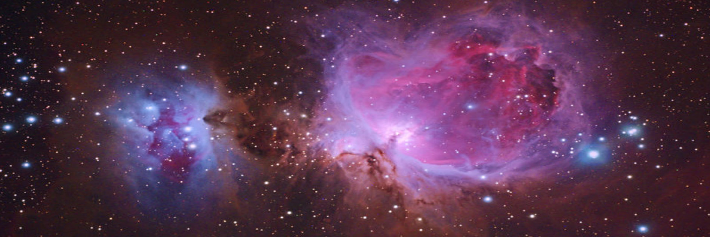

LA NEBULOSA DE ORION
¿Qué es la Nebulosa de Orión?
La constelación contiene tres objetos Messier: Messier 42 (M42, NGC 1976, Nebulosa de Orión), Messier 43 (M43, NGC 1982, Nebulosa de Mairan) y Messier 78 (M78, NGC 2068), y tiene siete estrellas con planetas conocidos. Hay dos lluvias de meteoritos asociadas con Orión, Oriónidas y Chi Oriónidas
El gas brillante de esta nebulosa rodea las estrellas jóvenes y calientes que hay en el borde de una inmensa nube molecular interestelar. Muchas de las estructuras filamentosas visibles en la imagen son en realidad ondas de choque : frentes donde el material que se mueve rápidamente se topa con el gas de movimiento lento. La nebulosa de Orión abarca unos 40 años luz y se encuentra a unos 1.500 años luz de distancia en el mismo brazo espiral de nuestra galaxia que el Sol. La gran nebulosa de Orión se puede encontrar a simple vista justo debajo y a la izquierda del cinturón fácilmente identificable de tres estrellas que hay en la popular constelación Orión. La fotografía, tomada el mes pasado, muestra una exposición de dos horas de la nebulosa en tres colores. Todo el complejo núcleo de la nebulosa de Orión, que incluye la nebulosa Cabeza de Caballo, se dispersará lentamente durante los próximos 100.000 años.